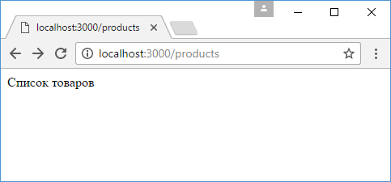
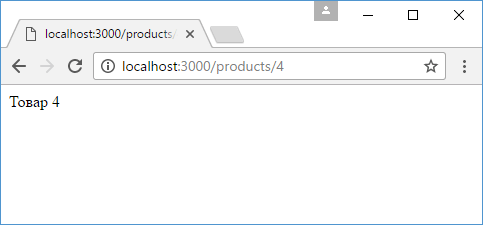

Router
Router позволяет определить дочерние подмаршруты со своими обработчиками относительно некоторого главного маршрута. Например, определим следующее приложение:
const
express = require("express");
const app = express();
app.use("/about",
function (request, response) {
response.send("О сайте");
});
app.use("/products/create",function (request, response) {
response.send("Добавление товара");
});
app.use("/products/:id",function (request, response) {
response.send(`Товар ${request.params.id}`);
});
app.use("/products/",function (request, response) {
response.send("Список товаров");
});
app.use("/", function (request,
response) {
response.send("Главная страница");
});
app.listen(3000);
Здесь у нас есть пять маршрутов, которые обрабатываются различными обработчиками. Но три из этих маршрутов начинаются с "/products" и условно относятся к некоторому функционалу по работе с товарами (просмотр списка товаров, просмотр одного товара по id и добавление товара). Объект Router позволяет связать подобный функционал в одно целое и упростить управление им. Например, перепишем предыдущий пример с использованием объекта Router:
const
express = require("express");
const app = express();
// определяем
Router
const productRouter = express.Router();
// определяем маршруты и
их обработчики внутри роутера
productRouter.use("/create", function(request,
response){
response.send("Добавление товара");
});
productRouter.use("/:id", function(request, response){
response.send(`Товар ${request.params.id}`);
});
productRouter.use("/", function(request, response){
response.send("Список товаров");
});
// сопотавляем роутер с конечной
точкой "/products"
app.use("/products", productRouter);
app.use("/about", function (request, response) {
response.send("О сайте");
});
app.use("/", function (request, response)
{
response.send("Главная страница");
});
app.listen(3000);
Здесь определен объект productRouter, который обрабатывает все запросы по маршруту "/products". Это главный маршрут. Однако в рамках этого маршрута может быть подмаршрут "/" со своим обработчиком, а также подмаршруты "/:id" и "/create", которые также имеют свои обработчики.
